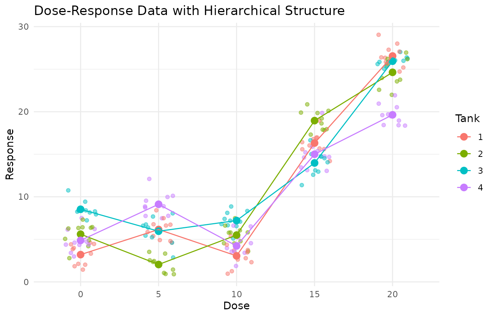

Dunnett's Test for Data with Hierarchical Structure
Source:vignettes/Dunnetts_Test_for_Data_with_Hierarchical_Structure.Rmd
Dunnetts_Test_for_Data_with_Hierarchical_Structure.RmddrcHelper provides a wrapper function
dunnett_test to use the multcomp package to
perform Dunnett tests on both the mixed model for individual data
(ind_model) and the tank-level linear model for aggregated
data (tank_model).
First we simulate a dataset with log-logistic dose-response.
# Let's simulate a single dataset and examine its properties
set.seed(123)
# Simulate dose-response data with specific variance components
sim_data <- simulate_dose_response(
n_doses = 5,
dose_range = c(0, 20),
m_tanks = 4,
k_individuals = 10,
var_tank = 6, # Between-tank variance
var_individual = 2, # Within-tank (individual) variance
include_individuals = TRUE,
response_function = function(dose) {
# Simple linear dose-response with threshold at dose 10
ifelse(dose > 10, 5 + 2 * (dose - 10), 5)
}
)
# Calculate theoretical ICC
theoretical_icc <- 6 / (6 + 2) # var_tank / (var_tank + var_individual)
cat("Theoretical ICC:", theoretical_icc, "\n")
#> Theoretical ICC: 0.75
# Examine the data structure
head(sim_data)
#> Dose Tank Individual Response
#> 1 0 1 1 2.116990
#> 2 0 1 3 3.318858
#> 3 0 4 1 2.985193
#> 4 0 4 3 3.405375
#> 5 0 3 2 7.934101
#> 6 0 2 1 2.787365
str(sim_data)
#> 'data.frame': 200 obs. of 4 variables:
#> $ Dose : num 0 0 0 0 0 0 0 0 0 0 ...
#> $ Tank : int 1 1 4 4 3 2 2 1 1 4 ...
#> $ Individual: int 1 3 1 3 2 1 3 2 4 2 ...
#> $ Response : num 2.12 3.32 2.99 3.41 7.93 ...
# Visualize the data to see the hierarchical structure
library(ggplot2)
# Plot individual data points with tank means
ggplot(sim_data, aes(x = factor(Dose), y = Response, color = factor(Tank))) +
geom_jitter(width = 0.2, alpha = 0.5) +
stat_summary(fun = mean, geom = "point", size = 3) +
stat_summary(fun = mean, geom = "line", aes(group = factor(Tank))) +
labs(title = "Dose-Response Data with Hierarchical Structure",
x = "Dose", y = "Response",
color = "Tank") +
theme_minimal()
# Calculate observed ICC using a mixed model
library(lme4)
mixed_model <- lmer(Response ~ factor(Dose) + (1|Tank), data = sim_data)
summary(mixed_model)
#> Linear mixed model fit by REML ['lmerMod']
#> Formula: Response ~ factor(Dose) + (1 | Tank)
#> Data: sim_data
#>
#> REML criterion at convergence: 927.7
#>
#> Scaled residuals:
#> Min 1Q Median 3Q Max
#> -2.22011 -0.64124 0.04355 0.67388 2.79017
#>
#> Random effects:
#> Groups Name Variance Std.Dev.
#> Tank (Intercept) 0.424 0.6511
#> Residual 6.060 2.4617
#> Number of obs: 200, groups: Tank, 4
#>
#> Fixed effects:
#> Estimate Std. Error t value
#> (Intercept) 5.5526 0.5074 10.942
#> factor(Dose)5 0.2649 0.5505 0.481
#> factor(Dose)10 -0.5574 0.5505 -1.013
#> factor(Dose)15 10.5100 0.5505 19.093
#> factor(Dose)20 18.6356 0.5505 33.855
#>
#> Correlation of Fixed Effects:
#> (Intr) fc(D)5 f(D)10 f(D)15
#> factor(Ds)5 -0.542
#> factr(Ds)10 -0.542 0.500
#> factr(Ds)15 -0.542 0.500 0.500
#> factr(Ds)20 -0.542 0.500 0.500 0.500
# Extract variance components
vc <- VarCorr(mixed_model)
tank_var <- as.numeric(vc$Tank)
residual_var <- attr(vc, "sc")^2
observed_icc <- tank_var / (tank_var + residual_var)
cat("Observed ICC:", observed_icc, "\n")
#> Observed ICC: 0.06538746
# Aggregate data to tank level
tank_data <- aggregate(Response ~ Dose + Tank, data = sim_data, FUN = mean)
head(tank_data)
#> Dose Tank Response
#> 1 0 1 3.202260
#> 2 5 1 6.156191
#> 3 10 1 3.054297
#> 4 15 1 16.318684
#> 5 20 1 26.548488
#> 6 0 2 5.604946
# Compare individual-level model with tank-level model
# Individual level (mixed model)
ind_model <- lmer(Response ~ factor(Dose) + (1|Tank), data = sim_data)
# Tank level (regular linear model)
tank_model <- lm(Response ~ factor(Dose), data = tank_data)
# Compare model summaries
summary(ind_model)
#> Linear mixed model fit by REML ['lmerMod']
#> Formula: Response ~ factor(Dose) + (1 | Tank)
#> Data: sim_data
#>
#> REML criterion at convergence: 927.7
#>
#> Scaled residuals:
#> Min 1Q Median 3Q Max
#> -2.22011 -0.64124 0.04355 0.67388 2.79017
#>
#> Random effects:
#> Groups Name Variance Std.Dev.
#> Tank (Intercept) 0.424 0.6511
#> Residual 6.060 2.4617
#> Number of obs: 200, groups: Tank, 4
#>
#> Fixed effects:
#> Estimate Std. Error t value
#> (Intercept) 5.5526 0.5074 10.942
#> factor(Dose)5 0.2649 0.5505 0.481
#> factor(Dose)10 -0.5574 0.5505 -1.013
#> factor(Dose)15 10.5100 0.5505 19.093
#> factor(Dose)20 18.6356 0.5505 33.855
#>
#> Correlation of Fixed Effects:
#> (Intr) fc(D)5 f(D)10 f(D)15
#> factor(Ds)5 -0.542
#> factr(Ds)10 -0.542 0.500
#> factr(Ds)15 -0.542 0.500 0.500
#> factr(Ds)20 -0.542 0.500 0.500 0.500
summary(tank_model)
#>
#> Call:
#> lm(formula = Response ~ factor(Dose), data = tank_data)
#>
#> Residuals:
#> Min 1Q Median 3Q Max
#> -4.5543 -1.2816 0.1967 1.8654 3.3025
#>
#> Coefficients:
#> Estimate Std. Error t value Pr(>|t|)
#> (Intercept) 5.5526 1.2460 4.456 0.000462 ***
#> factor(Dose)5 0.2649 1.7621 0.150 0.882520
#> factor(Dose)10 -0.5574 1.7621 -0.316 0.756118
#> factor(Dose)15 10.5100 1.7621 5.964 2.59e-05 ***
#> factor(Dose)20 18.6356 1.7621 10.576 2.38e-08 ***
#> ---
#> Signif. codes: 0 '***' 0.001 '**' 0.01 '*' 0.05 '.' 0.1 ' ' 1
#>
#> Residual standard error: 2.492 on 15 degrees of freedom
#> Multiple R-squared: 0.9261, Adjusted R-squared: 0.9063
#> F-statistic: 46.96 on 4 and 15 DF, p-value: 2.613e-08
# Extract and compare fixed effects
ind_fixed <- fixef(ind_model)
tank_fixed <- coef(tank_model)Perform Dunnett Test for Different type of Models
Homoscedastic mixed model
# 1. Homoscedastic mixed model (equivalent to ind_model1)
sim_data$Treatment <- factor(sim_data$Dose)
result1 <- dunnett_test(
data = sim_data,
response_var = "Response",
dose_var = "Treatment", # Using your Treatment factor
tank_var = "Tank",
include_random_effect = TRUE,
variance_structure = "homoscedastic"
)
result1
#> Dunnett Test Results
#> -------------------
#> Model type: Mixed model with homoscedastic errors
#> Control level: 0
#> Alpha level: 0.05
#>
#> Results Table:
#> comparison estimate std.error statistic p.value conf.low conf.high
#> 5 - 0 0.2648670 1.762098 0.1503135 9.996387e-01 -4.041493 4.571227
#> 10 - 0 -0.5573896 1.762098 -0.3163216 9.934653e-01 -4.863750 3.748971
#> 15 - 0 10.5099513 1.762098 5.9644545 1.252943e-08 6.203591 14.816312
#> 20 - 0 18.6355902 1.762098 10.5757988 0.000000e+00 14.329230 22.941950
#> significant
#> FALSE
#> FALSE
#> TRUE
#> TRUE
#>
#> NOEC Determination:
#> NOEC determined as 10This is equivalent to
ind_model1 <- lmer(Response ~ Treatment + (1 | Tank),sim_data) ## homoscedastic errors
# Apply Dunnett test to mixed model
ind_dunnett1 <- glht(ind_model1, linfct = mcp(Treatment = "Dunnett"))
s1 <- summary(ind_dunnett1)
result1$results_table$p.value - s1$test$pvalues < 1e-04
#> [1] FALSE FALSE TRUE TRUEHeteroscedastic mixed model
# 2. Heteroscedastic mixed model (equivalent to mod.nlme)
result2 <- dunnett_test(
data = sim_data,
response_var = "Response",
dose_var = "Treatment",
tank_var = "Tank",
include_random_effect = FALSE,
variance_structure = "heteroscedastic"
)
result2
#> Dunnett Test Results
#> -------------------
#> Model type: Fixed model with heteroscedastic errors
#> Control level: 0
#> Alpha level: 0.05
#>
#> Results Table:
#> comparison estimate std.error statistic p.value conf.low conf.high
#> 5 - 0 0.2648670 0.5760347 0.4598109 0.9761703 -1.146160 1.675894
#> 10 - 0 -0.5573896 0.4790326 -1.1635734 0.6085235 -1.730805 0.616026
#> 15 - 0 10.5099513 0.5216412 20.1478537 0.0000000 9.232164 11.787739
#> 20 - 0 18.6355902 0.5972666 31.2014594 0.0000000 17.172554 20.098626
#> significant
#> FALSE
#> FALSE
#> TRUE
#> TRUE
#>
#> NOEC Determination:
#> NOEC determined as 10
mod.nlme <- nlme::lme(Response ~ Treatment ,
random = ~ 1 | Tank,
weights = varIdent(form= ~1|Treatment),
data = sim_data)
ind_dunnett2 <- glht(mod.nlme, linfct = mcp(Treatment = "Dunnett"))
s2 <- summary(ind_dunnett2)
result2$results_table$p.value - s2$test$pvalues < 1e-05
#> [1] TRUE FALSE TRUE TRUE
result2$results_table$estimate -s2$test$coefficients
#> 5 - 0 10 - 0 15 - 0 20 - 0
#> 9.769963e-15 8.548717e-15 7.105427e-15 7.105427e-15Homoscedastic fixed effect model
# Tank level (regular linear model)
tank_data$Treatment <- factor(tank_data$Dose)
result3 <- dunnett_test(
data = tank_data,
response_var = "Response",
dose_var = "Treatment",
tank_var = "Tank",
include_random_effect = FALSE,
variance_structure = "homoscedastic"
)
result3
#> Dunnett Test Results
#> -------------------
#> Model type: Fixed model with homoscedastic errors
#> Control level: 0
#> Alpha level: 0.05
#>
#> Results Table:
#> comparison estimate std.error statistic p.value conf.low conf.high
#> 5 - 0 0.2648670 1.762097 0.1503135 9.995932e-01 -4.542552 5.072286
#> 10 - 0 -0.5573896 1.762097 -0.3163217 9.927925e-01 -5.364808 4.250029
#> 15 - 0 10.5099513 1.762097 5.9644562 6.506358e-05 5.702533 15.317370
#> 20 - 0 18.6355902 1.762097 10.5758018 4.527548e-09 13.828172 23.443009
#> significant
#> FALSE
#> FALSE
#> TRUE
#> TRUE
#>
#> NOEC Determination:
#> NOEC determined as 10This is equivalent to:
# Tank level (regular linear model)
tank_model <- lm(Response ~ Treatment, data = tank_data)
summary(glht(tank_model,linfct = mcp(Treatment="Dunnett")))
#>
#> Simultaneous Tests for General Linear Hypotheses
#>
#> Multiple Comparisons of Means: Dunnett Contrasts
#>
#>
#> Fit: lm(formula = Response ~ Treatment, data = tank_data)
#>
#> Linear Hypotheses:
#> Estimate Std. Error t value Pr(>|t|)
#> 5 - 0 == 0 0.2649 1.7621 0.150 1.000
#> 10 - 0 == 0 -0.5574 1.7621 -0.316 0.993
#> 15 - 0 == 0 10.5100 1.7621 5.964 <1e-04 ***
#> 20 - 0 == 0 18.6356 1.7621 10.576 <1e-04 ***
#> ---
#> Signif. codes: 0 '***' 0.001 '**' 0.01 '*' 0.05 '.' 0.1 ' ' 1
#> (Adjusted p values reported -- single-step method)Heteroscedastic fixed effect model
result4 <- dunnett_test(
data = tank_data,
response_var = "Response",
dose_var = "Treatment",
tank_var = NULL,
include_random_effect = FALSE,
variance_structure = "heteroscedastic"
)
result4
#> Dunnett Test Results
#> -------------------
#> Model type: Fixed model with heteroscedastic errors
#> Control level: 0
#> Alpha level: 0.05
#>
#> Results Table:
#> comparison estimate std.error statistic p.value conf.low conf.high
#> 5 - 0 0.2648670 1.829785 0.1447531 9.997148e-01 -4.216766 4.746500
#> 10 - 0 -0.5573896 1.424783 -0.3912102 9.866375e-01 -4.047064 2.932285
#> 15 - 0 10.5099513 1.548110 6.7888938 2.287759e-11 6.718217 14.301686
#> 20 - 0 18.6355902 1.924281 9.6844412 0.000000e+00 13.922510 23.348670
#> significant
#> FALSE
#> FALSE
#> TRUE
#> TRUE
#>
#> NOEC Determination:
#> NOEC determined as 10This is equivalent to:
library(nlme)
gls0 <- gls(Response ~ Treatment, data=tank_data,weights=varIdent(form= ~1|Treatment))
ind_gls0 <- glht(gls0, linfct = mcp(Treatment = "Dunnett"))
s4 <- summary(ind_gls0)
result4$results_table$estimate -s4$test$coefficients
#> 5 - 0 10 - 0 15 - 0 20 - 0
#> 0 0 0 0
result4$results_table$p.value - s4$test$pvalues < 1e-05
#> [1] TRUE TRUE TRUE TRUE